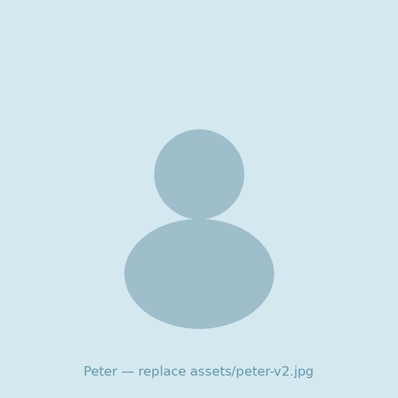

A free 75-minute breathing session for men in caring jobs who have nothing left by the end of the day
There is a reason, it is not a character flaw, and on this night you will feel what it takes to change it.
Free · Online on Zoom · 75 minutes
There is the man who holds it together at work.
And there is the man who sits in the car in the driveway for a few minutes before he walks inside, because he has nothing left for the people behind that door.
Same man. Nobody sees the second one.
You still function. You still show up. You have not missed a day that mattered in years.
But you are flat by the end of the day and running on habit after it. You save your last scrap of patience for your own kids and hate that you have to ration it. You snap over small things and go quiet over big ones. When someone asks how you are going, you say fine, and a while ago that stopped being true.
You have already tried the obvious things. Pushing through. The gym. A lighter week. A proper holiday. And every time, a week back in, you are right back where you started.
That is not because something is wrong with you. It is because the thing that is worn out is not your attitude. It is the setting your body has been stuck on for years.
Spend enough years scanning a room for trouble, absorbing other people's worst days, staying calm on the outside no matter what, and your nervous system learns that as its normal setting. On alert. Braced. It got you through years of shifts, call-outs and classrooms.
The problem is the switch does not turn off when the shift ends. It comes home with you. That is why you can be dead flat at work and short-fused in your own kitchen on the same day. Same switch, both places.
Here is the part nobody ever told you: the switch is trainable, and the lever is your breath. It is the one part of that whole automatic system you can operate directly. Slow count in, longer count out, and the body starts standing down. Not because it is magic. Because that is how the machinery works.
This session is not a talk about that. It is 75 minutes of doing it.
This is a guided breathwork session, the same one Peter has been running live. Straight up: parts of it will feel unusual the first time. Here is the whole shape of it, so nothing surprises you.
Short. Safety first: what to do if anything feels like too much (slow in, longer out, and you are back in charge), and the confidentiality rule: what is seen, heard and felt in the session stays there.
Shaking out shoulders and hands, getting out of your head and into your body. Feels a bit daft for ninety seconds, works anyway.
It starts simple: hand on your belly, learning the rhythm. Then Peter takes it deeper, and this is the real work. Strong, connected breathing, lying down, eyes closed. Things can come up in this part: for some men that is just heat or tingling, for some it is emotion they did not know was queued up. Both are normal. Nothing to perform, nothing to explain to anyone. As Peter puts it: let your body speak.
A short, sharp breathing round that leaves you clearer than you have felt in a while, then quiet. Just music, lying still. Many men say this is the first real rest they have had in months.
Peter ends with an old call-and-response chant. Sing, hum, or just lie there and let it wash over you. It is the one part of the night that will sound "out there" on this page, and it earns its place in the room. Like everything else in the session: it is an invitation, not a requirement.

Peter Curtis taught for 25 years, the last 15 in ACT public schools. The job wore him down the same way it might be wearing you down, except further: at one point the system declared him unfit to teach. He fought his way back, moved schools, re-entered the classroom, and began the work that carried him here: learning to work with his own nervous system instead of against it. He retrained as a counsellor and breathwork facilitator, and now runs Men Caring4 Men for men still inside jobs like the one that nearly finished him.
He is not a guru. He is a man who hit the wall in a caring job and found the door out, and the session runs like it: clear instructions, safety first, nothing forced.
Because this is the front door. Near the end of the night Peter will spend a few minutes telling you about his 12-week program, for men who want to go further with this. That is the whole pitch, and it is optional. No hard sell, no countdown timers, no one calling your phone.
If all you ever take is the free session and the breathing, that is a win, take it with our blessing.
DAY, DATE | 7:30pm AEST | Online on Zoom | 75 minutes | Free
The room is capped at 25 men so Peter can actually see who is in it. When it is full, it is full.
You will get the Zoom link by email, plus one reminder on the day. Nothing else.
No. Nobody is called on, and there are no introductions. Camera off is fine.
Peter is not selling you a belief system. The breathing is physiology: it is the one part of your stress response you can steer directly. A couple of elements, like the chant at the end, come from older traditions; take them, leave them, or just listen. Nothing in the night requires you to believe anything.
Some men do not, first time, and a few feel a lot more than they expected. Both are normal starting points, and Peter works with both on the night. Either way you leave knowing the technique.
The session is trauma-informed and run to a protocol: contraindications up front (if you have a heart condition, respiratory problems, or a history of fainting, email first; breath holds are skipped in pregnancy), a named way to down-shift at any moment, and everything opt-out. You are in charge of your own pace the entire time.
A quiet spot where you can lie down, a floor or a bed, headphones if the house is loud. That is it.
Because this is 75 minutes that gives energy back instead of taking it. Worst case, you spent one evening lying on the floor learning why you are so tired.
You have spent your whole working life being the calm one for everyone else.
Seventy-five minutes. Lying down. For you this time.
Save my spot